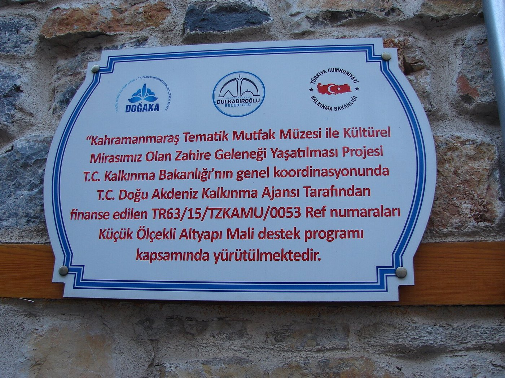

|  |
Tematik Mutfak Müzesi
Kahramanmaraş’ın tarihi konaklarının en nadide örneklerinden bir tanesinde, 2018 yılından itibaren Dulkadiroğlu Tematik Mutfak Müzesi ev sahipliği yapıyor, misafirlerini ağırlıyor.Tarihi Demirciler Çarşısı’ndan mutfak müzesine doğru adımlarken, çekiç ve çarkların yüzlerce yıldır susmayan ahenkli sesleri kulağınızın pasını alacaktır. Dar bir sokağın ucunda saklambaç oynayan bir çocuk gibi kapısının önüne gidene kadar kendini size göstermeyen konağın avlusuna adım attığınızda karşılaşacağınız taş ve ahşabın uyumlu birlikteliği de gözlerinize hitap edecektir.
|
|
Yedi Güzel Adam Müzesi
Kahramanmaraş Büyükşehir Belediyesi şiirin aşkla yoğrulduğu söz ustası yazarlar ve şairler diyarı Kahramanmaraş'ın hem sosyal , hem kürtürel ve sanatsal anlamda hem de UNESCO Dünya Edebiyat Kentleri listesine adını yazdırmasında önder Yedi Güzel Adam Edebiyat Müzesi olacaktır. Müzede Edebiyatın tarihi ve bu alanda şehrimizin önde gelen kalem sahiplerinin: Kiokslar, Projeksiyonlar ile diğer seslendirme ve film teknolojileri ile anlatıldığı tasarım ve görsel özeni yüksek bir müze özelliği taşıyacak, ayrıca bunların yanı sıra konferans salonu, sergi alanı, büyük bir kütüphane kısmı binayı bütünleyen diğer mekanlardır.
|